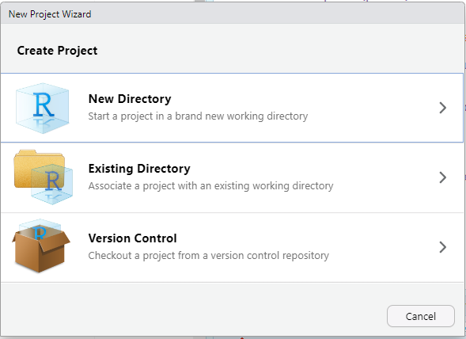
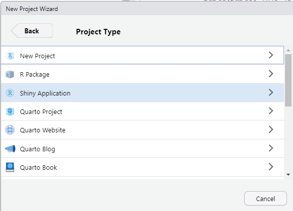
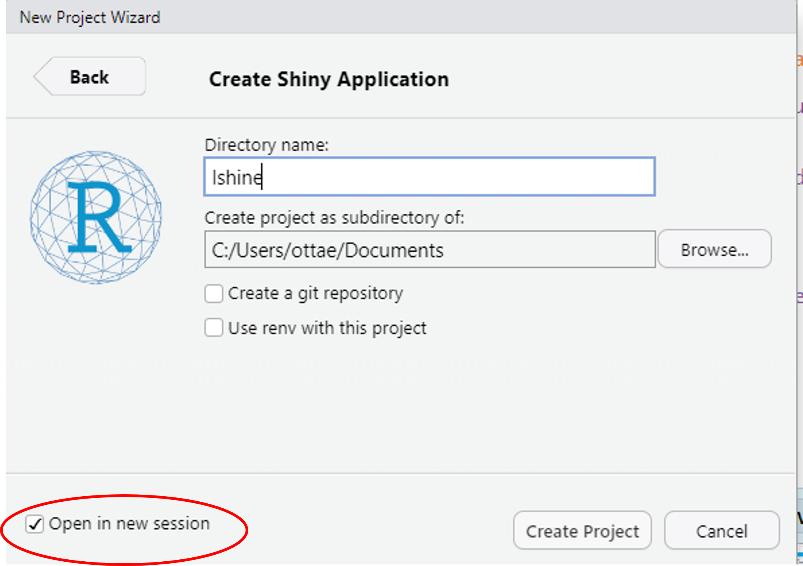

ui (User Interface)
The container, whatever sees the user
Used for setting the desired configurations of options that will be elaborated in the server
Used for displaying the results of the computations that took place in the server
server
It gets the work done, according to the configuration set in the UI
Replaces the results into the allocated spaces
Define something in the ui and not using in the server: nothing happens, it just doesn’t exist
Calling something in the server that has not been defined in the ui: errors everywhere
And then:
Yes… it’s that easy
Use R projects with the default for shiny app creations
10 minutes coding \(=\) 1 hour of debugging
If the app is particularly complex and long, it’s better to save ui and server in two different scripts



sliderInput() # Slider input widget
numericInput() # Numeric input control
selectInput() # Select list input control
checkboxInput() # Checkbox input control
checkboxGroupInput()
dateInput() # Date input
fileInput() # File upload control
radioButtons() # Radio buttons
textInput() # Text input control
passwordInput() # Password input control
actionButton() # Action button
dateInput() # Date input
dateRangeInput() # Input a data rangeComplete list (with code)
plotOutput() # Plot output element
textOutput() # Text output element
verbatimTextOutput() # Verbatim text output element
tableOutput() # Table output element
dataTableOutput() # Data table output element
htmlOutput() # HTML output element
uiOutput() # user interface element
downloadButton() # Download button
Progress() # Reporting progress (object oriented)
withProgress() # Reporting progress (functional)
outputOptions() # Set options for an output objectLabels:
ui = fluidPage(selectInput(inputId = "mySelection",
label = h3("Select box"),
choices = list("Choice 1" = 1, "Choice 2" = 2, "Choice 3" = 3),
selected = 1),
verbatimTextOutput(
outputId = "myOutput"
))
server = function(input, output) {
output$myOutput = renderPrint({
paste(paste("This is my choice"), input$mySelection)
})
}
shinyApp(ui, server)Complete list (look for “Application layout”)
ui <- fluidPage(
sidebarLayout(
sidebarPanel(
selectInput(inputId = "dataset", # name of the input (for the server)
label = "Choose a dataset:", # name of the input (for the users)
choices = c("rock", "pressure", "cars")) # options (for both
# users & server)
),
mainPanel(
plotOutput( # define the graphical output (we're telling R that this output
"graph" # container must contain a plot)
),
verbatimTextOutput( # define the verbatim output (we're telling R that
"summary" # this output container must contain a Verbatim output)
)
)
)
)server <- function(input, output){
output$graph <- renderPlot({
if(input$dataset == "rock"){ # call the input and its options with their label
data <- rock
} else if (input$dataset == "pressure" ){
data <- pressure
} else if (input$dataset == "cars") {
data <- cars
}
plot(data[, c(1:2)])
})
output$summary <- renderPrint({
if(input$dataset == "rock"){
data <- rock
} else if (input$dataset == "pressure" ){
data <- pressure
} else if (input$dataset == "cars") {
data <- cars
}
summary(data[, c(1:2)])
})
}server <- function(input, output){
values <- reactiveValues() # create the shelf with reactive values
dataInput <- reactive({ # create a reactive environment (it reacts to whatever input receives)
if(input$dataset == "rock"){ # this part is the same as before
data <- rock
} else if (input$dataset == "pressure" ){
data <- pressure
} else if (input$dataset == "cars") {
data <- cars
}
})
observe({ # ta-da, the shelf is in action. To make it works,telling R
values$data <- data.frame(dataInput()) # it has to be called inside an observe function,
}) # we're using a reactive object
output$graph <- renderPlot({
plot(values$data[, c(1:2)]) # call the shelf and you're all set
})
output$summary <- renderPrint({
summary(values$data)
})
}There are two ways of using the action buttons:
eventReactive()(Throughout the course \(\rightarrow\) solution number 2 because I’m not sure I’m good with solution 1, sorry)